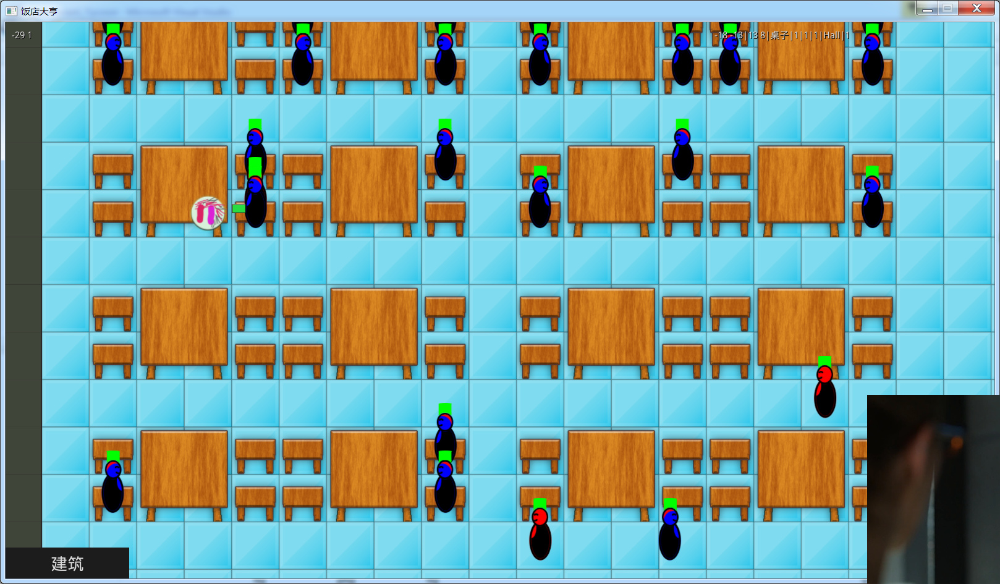

spwork
I created a 2D game with urho3d, but it’s vague, how can I optimize this to make him as clear as possible. 
Sorry, I didn’t make it clear. What I want to say is that my
StaticSprite2D
display is a little vague, and how to make it clear.
In addition, I also want to ask a question: what is the difference between the
SetOrthoSize (float orthoSize)
and the
SetZoom (float zoom) of the camera component
?